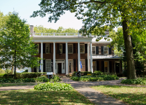
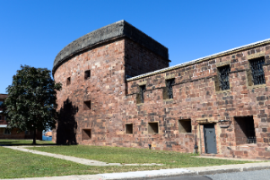

As President Clinton left office in January 2001, with no resolution of the island's future in hand, and at the urging of members of the New York congressional delegation, he established a Governors Island National Monument by Presidential Proclamation 7402 of January 19, 2001. The proclamation did not fully establish the boundaries of the monument, but did set forth the federal intention of preserving the fortifications, Fort Jay and Castle Williams, the oldest and most historic features on the island. The Justice Department under President George W. Bush concluded the proclamation possessed technical errors, but did not revoke or invalidate the proclamation.

On January 31, 2003, the island was conveyed to an intermediary, the National Trust for Historic Preservation, which attached restrictive land use covenants to the deed, then conveyed the island to two parties: 22 acres (89,000 m2) was conveyed to the U.S. Department of the Interior for use as a national monument; and 150 acres (0.61 km2) went to the Governors Island Preservation and Education Corporation formed jointly by the State and City of New York now The Trust for Governors Island, an instrumentality of the City of New York for the purpose of administering and redeveloping the island. Presidential Proclamation 7647 of February 7, 2003 formally re-affirmed the establishment of the national monument.